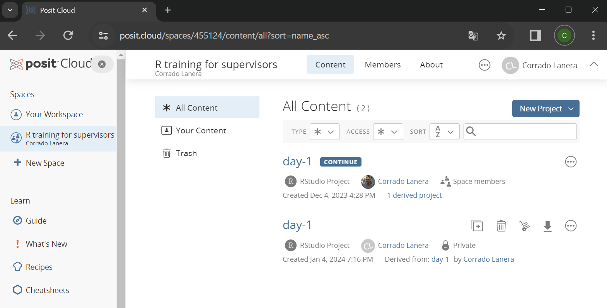
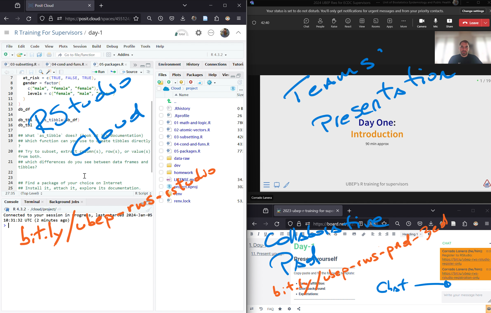
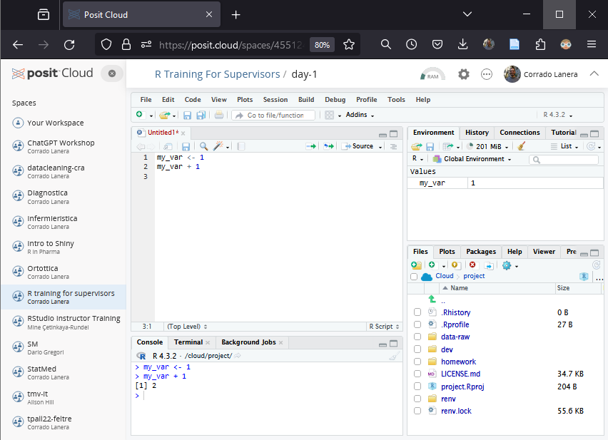
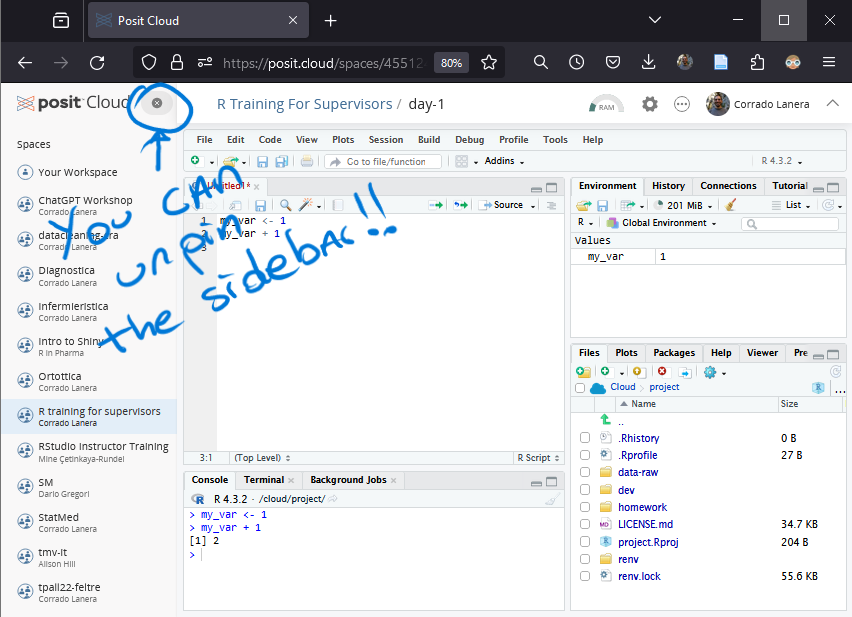
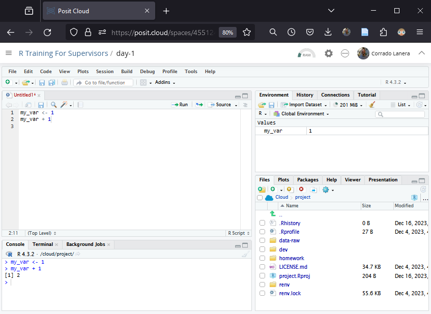
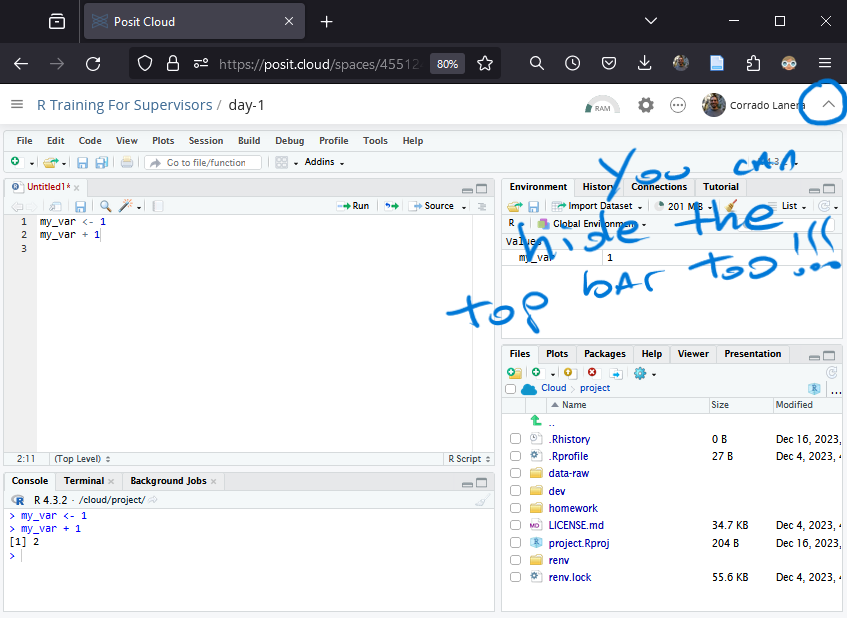
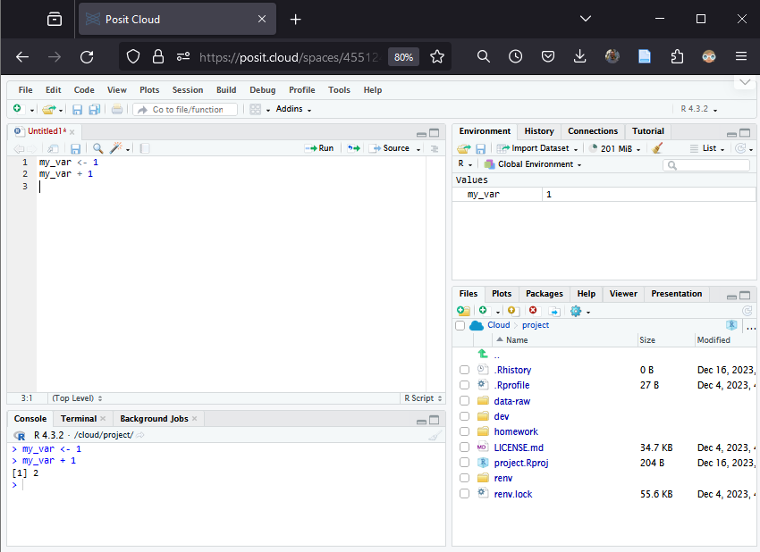
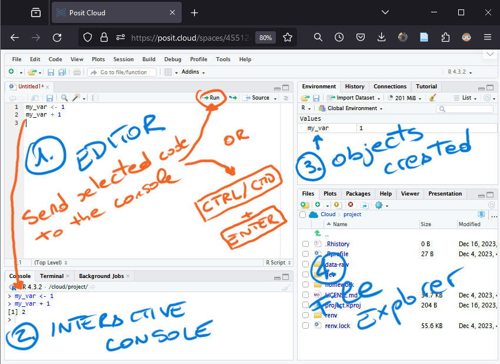

Day One:
Introduction
40 min approx
Overview
Questions
- Who we are?
- What are we going to do in the course?
- How is the course organized?
- How do you access/use the course material?
- R/RStudio/Tidyverse
Why and How?
Lesson Objectives
To know the course
- Objectives and topics.
- Teachers and their contacts.
To be able to do/use
- Course website and slides.
- Course cloud workspace.
- R sessions within RStudio.
- Basic operations in R.
Ts/TAs presentation
Corrado Lanera
Assistant professor at the Univ. of Padova - Italy.
Responsible for the Laboratory of Artificial Intelligence for Medical Sciences.
Rstudio Certified Instructor in the Tidyverse.
Daily working with R since 2014.
Best citation: “The only way to go fast is to go well” - Robert Uncle Bob Martin.
-
Contacts:
GitHub, Telegram, Linkedin, X/Twitter: @CorradoLanera.
Staff
Administrative
- Giulia Lazzaretti
- Chiara Giarracca
Scientific
- Ileana Baldi
- Dario Gregori
- Corrado Lanera
Support
- Ajsi Kanapari
- Ali Aqsa
- Allegra Sartore
- Daniele Sabbatini
- Konstantina Pilali
- Sara Ahsani
Course organization,
Teaching materials, and
Personalized assistance
Main Objective
The training course is expected to cover an introduction to R for exploratory data analysis (EDA): data management, tabular descriptive analysis, and visualization.
Teaching Philosophy
- We are not professional programmers.
- We spend more time understanding rough code than writing it cleanly directly.
- We gain more enthusiasm from (even small) practical results than from theory.
- We’ll learn better by doing, and cannot become professionals from beginners attending a single course.1
- We solve problems better in groups than alone.
So we will
Present small pieces of concepts at a time.
Select packages, functions, and coding styles to prioritize the ease of understanding.
Ask you questions often and write and execute code at incremental stages of each topic.
Assign you homework for the next lesson to discuss together.
Provide platforms to answer and discuss collaboratively.
Course organization
The course will take place virtually on Teams every Monday and Thursday from 1:30-5:00 p.m. CET between 8-18 January 2014 (4 half-days over two weeks)
Session 1: 2024 January 08, 1:30-5:00 p.m. CET (Click here for your timezone).1
Session 2: 2024 January 11, 1:30-5:00 p.m. CET (Click here for your timezone).
Session 3: 2024 January 15, 1:30-5:00 p.m. CET (Click here for your timezone).
Session 4: 2024 January 18, 1:30-5:00 p.m. CET (Click here for your timezone).
Teaching Materials & Resources
| Teams’ room: | |
| Website (agenda, slides, and assessments): | https://bit.ly/ubep-rws-website |
| RStudio cloud workspace: | https://bit.ly/ubep-rws-rstudio |
| Really real-time collaborative pad (chat included): | https://bit.ly/ubep-rws-pad |
Assistance
Technical Assistance: no infrastructural technical assistance will be provided during the session by UBEP staff. Please contact your ECDC IT staff for this matter.
Rstudio Cloud Assistance: write on Teams chat, and a person from UBEP will contact you directly on a separate Teams meeting
Coding issues and questions: feel free to discuss and collaborate on the pad’s chat
Local installation of R/RStudio: Local installation is not required for the course, and we won’t teach the course on your local installation. However, if you want to install R and RStudio on your computer, we will provide you instructions and support (possibly after the course). Please, contact the supporting staff for this matter during the class, or the administrative staff after the course.
Slides
From the website, you can access the slides of the day and navigate them independently
You can follow and navigate the presentation slides on your phone, tablet, or laptop from the web. When the presenter changes slides in their screen-shared (master) presentations, everyone will follow and see the same content on their device.
Posit Cloud
A fully functional RStudio IDE on the cloud.
Free for you to use within the course workspace.1
Once you join the workspace, you can enter the R project provided for the day.
The environment is already set for you

Suggested screen layout
- Teams:
- Shared screen
- Speaker view
- Chat (assistance & reactions)
- RStudio Cloud
- Real-time collaborative pad:
- Exercise
- Comments
- Chat (your discussion place)
Suggested screen layout
- Teams:
- Shared screen
- Speaker view
- Chat (assistance & reactions)
- RStudio Cloud
- Real-time collaborative pad:
- Exercise
- Comments
- Chat (your discussion place)

Lessons organization
Discussion on the previous lesson’s homework.
Overview and aims of the day.
Passive-interactive-active cycles.
wrap up, and summary.
Homework assignment presentation.
-
Passive: slide presentation with sample code and suggestion.
Tip
- You inject (
|>) the previous code’s result into the subsequent function call - You add (
+) layers to a plot.
- You inject (
-
Interactive: questions for you to answer.
Your turn
Connect to our pad and present yourself.1
Active: incremental coding project.
03:00
R/RStudio
R
-
A language: we write R code in the R language.
-
An Engine: able to execute computations, analyses, graphs, reports, …
RStudio (in the cloud)
IDE = Integrated Development Environment (to work with R)
side- and top-bar for workspaces and projects navigation.
Multi-tab text editor to view, modify, execute (
CTRL/CMD + ENTER) code in script filesAn interactive console for the R interpreter.
Overview of defined R objects in the current session.
Embedded file explorer connected to the current session R working directory.






The Tidyverse
The tidyverse is an opinionated collection of R packages designed for data science. All packages share an underlying design philosophy, grammar, and data structures.
Design Principles
- Reuse existing data structures.
- Compose simple functions with the pipe.
- Embrace functional programming.
- Design for humans.
Packages
- ggplot2: create data visualizations using the Grammar of Graphics.
- dplyr: a set of verbs to solve data manipulation challenges.
- tidyr: a set of functions that help you get to tidy data.
- readr: a fast and friendly way to read rectangular data
- purrr: a consistent tools suite for functional programming.
- tibble: a modern re-imagining of the data frame.
- stringr: a set of functions to work with strings as easy as possible.
- forcats: a tool suite that solves common problems with factors.
- lubridate: a tool suite to work with dates and date-times.
Acknowledgment
To create the current lesson we explored, use, and adapt contents from the following resources:
- Carpentrie’s Programming with R course material.
- Carpentrie’s R for Reproducible Scientific Analysis course material.
- Hadley Wickham’s Advanced R - (2e)
- Hadley Wickham’s R for Data Science (2e)
The slides are made using Posit’s Quarto open-source scientific and technical publishing system powered in R by Yihui Xie’s kintr.
Additionl Resources
- The Tidyverse
License
This work by Corrado Lanera, Ileana Baldi, and Dario Gregori is licensed under CC BY 4.0

References

UBEP’s R training for supervisors